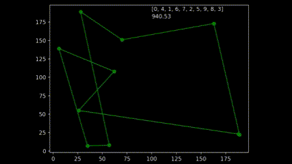
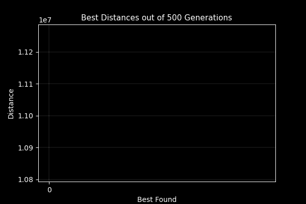

Pure Python Genetic Algorithm

Core Methods
Fitness Function
One of many challenges I encountered was what my fitness measure should be. As the task was to find the shortest distance to visit each location; I knew I had to have some order arrangement that I could calculate the overall distance travelled by summing the Euclidean distance from point to point.
Creating Population
I decided to make my population a list of visit orders. I took a starting order of 0 up to the final index point of 5000 then shuffled this order, adding “pop_size” of them. The fitness function then accessed the cities list by the order and produced a distance for each order, adding the result to a list of fitness's. These were then inversed so smaller distances would have a higher probability; and finally normalised.
Selection
The selection process used was a roulette wheel. A random float was generated, and all fitness scores were summed until a candidate passed the threshold; returning that candidate. This was done twice so there would be two candidates to perform a crossover with.
Crossover
The next problem that presented itself was the fact that 2 candidates could not simply undergo a single or multipoint crossover as the resulting child may contain the same number either side of the crossover point. This potentially remove some of the cities from the order and produce incorrect fitness scores. An ordered selection (OX1) was instead used which would take a slice of the sequence from a parent and fill the remaining slots with orders that are not already present from the second parent.
New Generation
To create the new generation, the new child sequence was taken and underwent a probabilistic mutation. The mutation would randomly swap 2 points in the sequence if a random float generated was below the mutation rate value. The new generation would contain the same number of orders as the prior generation to ensure consistency. The fitness, selection and new generation methods repeated for a specified number of iterations and saved the results as a csv.
Code will be viewable upon assignment submission
Visualisations
During early development of the algorithm, it helped to produce simple animations using the Matplotlib animation library and the itertools count class to visualise the results over time. The animation shows 10 randomly generated points and draws the shortest path after 250 generations and a population size of 50. As plotting the current order real time would drastically slow down the GA’s (Genetic Algorithm’s) draw method. I created a visualisation script that would open the csv’s from each run and create an animation. As the orders were saved as a list object in the csv, I had used regex to pull the numeric values using the findall() function coupled with \d+.
Part of the assignment requirements was to surpass the value generated from the lecturer which was 10,987,144.137 units. My GA produced a value of 10,810,297.17 units in 500 generations with a population size of 100. Although slow to run, genetic algorithms are not usually used for this case, so the result was satisfactory. I attempted to implement multiprocessing to speed up the process on the fitness function which yielded much improvement as further investigation with the timeit module found that the bulk of the time was spent on performing the crossover, mutation and populating the new generation. I am currently trying to improve the performance of those class methods by using cython. I plan to put the slow methods in a pyx file and generate the code at compile time.